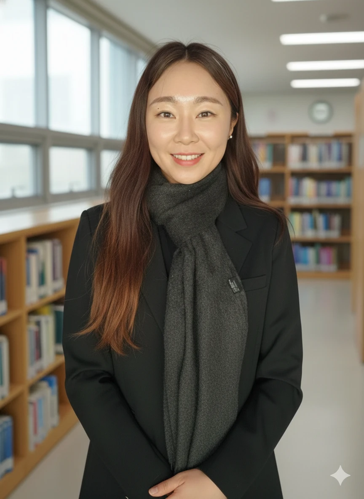

경계를 허물고, 교육과 삶을 잇는 청각장애아교육 박사 · 초등교사 이율리입니다.
이율리, 황수미, 이현미 (2023). 초등학교 교사가 인식하는 수어, 청각장애, 농정체성에 대한 관계 연구. 한국청각언어장애교육연구, 14(1), 41–61. https://doi.org/10.24009/ksehli.2023.14.1.003
이태형, 홍정숙, 이율리, 홍진희 (2022). 개별화교육계획 실행을 통한 평가와 지원요구에 대한 초등학교 통합학급교사의 인식. 특수아동교육연구, 24(3), 245–272. https://doi.org/10.21075/kacsn.2022.24.3.245
손짓과 몸짓의 울림으로 표현하는 또 하나의 언어, 훌라 이야기입니다.